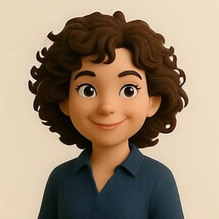
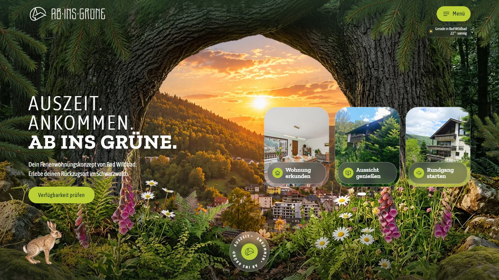
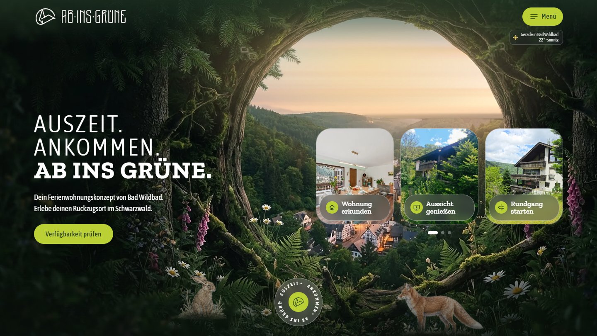
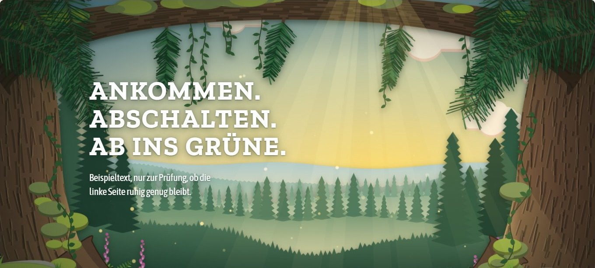
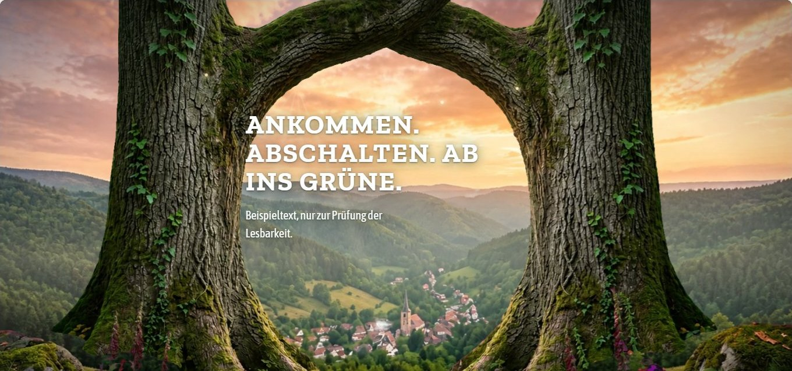
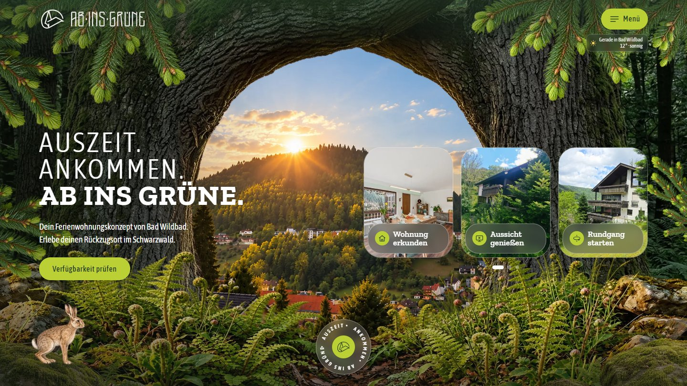
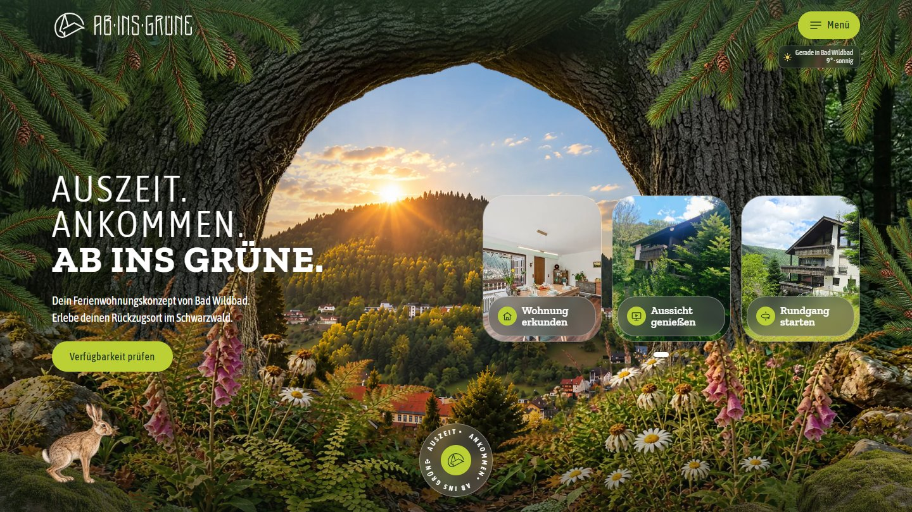
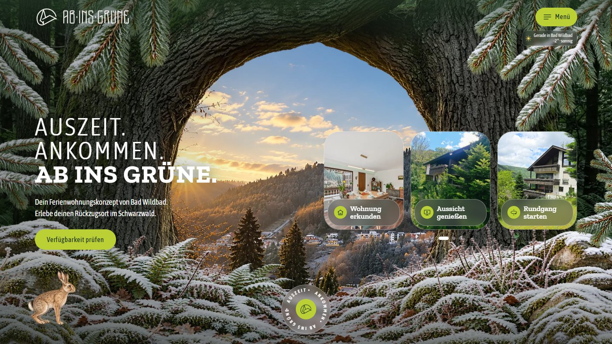
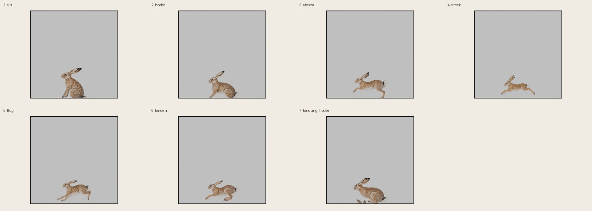
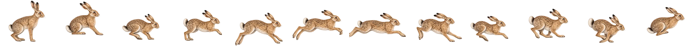

DL Vibe Coding Bootcamp · Finaler Check-In · 2. November 2026
Dein Ferienwohnungskonzept von Bad Wildbad
Wie lässt sich eine Ferienwohnung digital begleiten? Vom ersten Eindruck über die Buchung bis zum Erlebnis vor Ort.
Franziska Löffelmann
Wer spricht

Franziska Löffelmann
- Gastgeberin „Ab ins Grüne“
- CAD-Konstrukteurin
- Goldschmiedemeisterin
- Design und Entwicklung in der Schmuckbranche
Warum BootcampMeine Ideen aus Design und Handwerk selbst in digitale Produkte übersetzen, mit KI etwas Eigenes bauen und eine Seite entwickeln, die zur Ferienwohnung passt.
Die Idee
Wir verkaufen Ferien nicht über Ausstattung und Lage, sondern über ein Urlaubserlebnis, das man wiedererkennt.
Ab ins Grüne verbindet besondere Unterkünfte mit einer starken Marke, Storytelling und gezielter Kommunikation. Die erste Unterkunft: eine Ferienwohnung in Bad Wildbad.

Die kritischste Annahme
Gastfreundschaft beginnt vor der Ankunft.
Wie kann ein zusammenhängendes digitales Erlebnis den Aufenthalt sinnvoll ergänzen?
Wie getestet
Seit 29. Oktober live, bisher 4 Tage. Geprüft: Handy und Desktop, Buchungswege, Kontaktformular.
Was sich verändert hat
Ich dachte, ich baue eine Buchungsseite. Gebaut habe ich ein Erlebnis, das beim Gast anfängt, bevor er anreist.
Ergebnis: noch zu früh, es gibt noch keine Rückmeldungen.
Journey · Entscheidung 1: Hero
Vom ersten Hero zum Bild aus einem Guss

Erster Hero: KI-Waldrahmen mit erfundenem Städtchen.

Entwurf 042: selbst gezeichnet. Der Stil war nicht abgefragt, verworfen.

Entwurf 046: erst ein Gesamtbild, daraus die Ebenen.
Heute: live, mit Jahreszeit und echtem Wetter.
Was ich mitnehmeEinzeln erzeugte Ebenen wirken zusammengeklebt. Es braucht ein Gesamtbild als Master.
Ergebnis
Eine Seite, vier Jahreszeiten, echtes Wetter

Frühling
Sommer

Herbst

Winter
Selbst ausprobieren: Jahreszeit und Wetter einstellen lfranne.github.io/ab-ins-gruene-vorschau/jahreszeiten
Ich wollte erst echte Fotos, geworden ist es naturrealistische Bild-KI. Das passt nicht ganz zum Anfangsanspruch „echt, regional“.
Die Bilder sind überwiegend KI-erzeugt, die Nutzungsrechte sind noch zu klären.
Journey · Entscheidung 2: Der Hase
Das Ziel: ein 3D-Hase, der natürlich hoppelt

Fünf Runden mit Blender und Meshy: Porzellanfigur, Posenfolge wie Daumenkino, Skelett scheitert im Flug.
So hoppelte der 3D-Hase (Knopf „Hoppeln“): lfranne.github.io/ab-ins-gruene-vorschau/hase
Am 29. Oktober beendetIch wollte einen 3D-Hasen, der sich bewegt und natürlich hoppelt. Die Aufgabe wurde nicht richtig umgesetzt, also ist 2D die Notlösung.
Notlösung
Zwölf Zeichnungen, harte Wechsel

Gezeichnete Posen statt berechneter Zwischenbilder. Ein Lauf je Seitenaufruf, auf vier Seiten.
Was ich mitnehmeBerechnete Zwischenbilder sahen falsch aus. Gezeichnet schlägt berechnet.
Bauen mit KI
Drei Regeln, die den Unterschied gemacht haben
Plan, Entwurf, Freigabe
Größere Aufgaben nur so: analysieren, Varianten, HTML-Entwurf, meine Freigabe, Plan, Umsetzung.
Entwurf zuerst als Vorschau
Neue Ideen erst als nummerierte Testseite im Browser. Ablehnen kostet nichts, es geht nichts kaputt.
Ein Schritt nach dem anderen
Eine Sache pro Nachricht, Änderungen nur nach meinem Ja. „Keine Präferenz“ ist keine Freigabe.
GedächtnisÜbergabedatei, „Weiter geht’s“ und Memory-Dateien machen aus jeder neuen Session eine Fortsetzung.
In vier Wochen
Meine EmpfehlungLasst euch Varianten zeigen, bevor etwas gebaut wird.
Ehrlich
Was nicht gut lief
Zu lange mit Kleinigkeiten
Hero-Varianten, Feinheiten der Hasenbewegung, Zeilenbreiten, Pixel und Wortlaut.
Zu spät abgebrochen
Fünf 3D-Runden beim Hasen, bevor ich auf 2D gewechselt bin.
Rechte und Recht offen
Nutzungsrechte an KI-Bildern, Rechtstexte ohne Prüfung. Ein bewusst getragenes Risiko.
Noch nicht gemessen
Keine Rückmeldungen von Gästen. Auf meinem 4K-Bildschirm ist die Seite noch langsam.
Heute andersFrüher abbrechen.
Danke. Eure Fragen?
Franziska Löffelmann · DL Vibe Coding Bootcamp · Finaler Check-In 2026